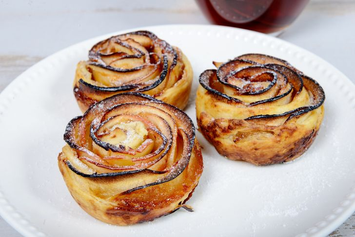

3 - TARTALETAS DE MANZANA

Ingredientes:
- 3 manzanas
- 250 g. de hojaldre
- 2 cucharadas de mantequilla
- 1 cucharada de azúcar moreno
Elaboración:
- Cortar las manzanas peladas en láminas finas.
- Estirar el hojaldre, pintar con mantequilla y espolvorear azúcar moreno.
- Colocar la manzana sobre el hojaldre hecho tiras, y enrollar para que quede forma de flor.
- Hornear a 180º C hasta que el hojaldre se dore.
VOLVER